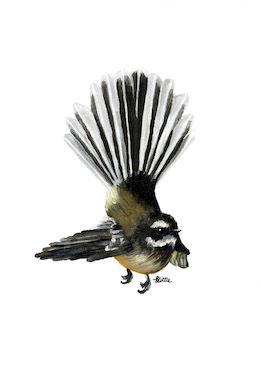
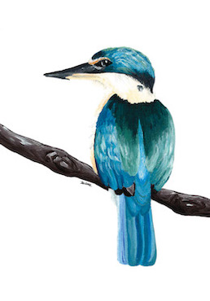
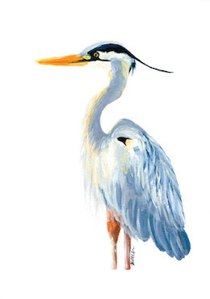
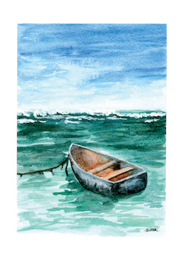
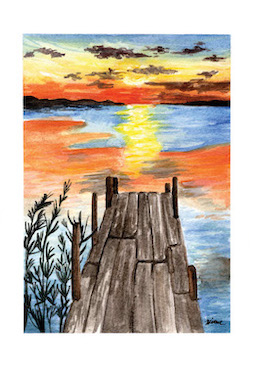
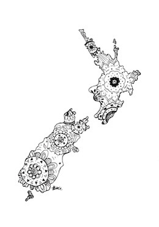
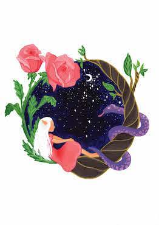
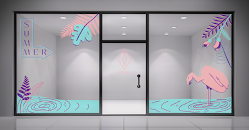

Fantail
One of my favourite bird paintings I created in 2022.
A Fantail/Piwakawaka painted in acrylic on A5 catridge paper. I really wanted to capture in this painting how this fantail was mid flight. This is because all my other bird paintings have been perched on a branch or standing (the Heron).

Tui
This Tui is painted in acrylic on A5 cartridge paper. I love how vibrant the blue on the Tui's wings are and the extra pops of colour from the flowers on the branch.

Kingfisher
This Kingfisher has been painted with acrylics on A5 cartridge paper. I'm very pleased with the outcome of this painting, as the feathers, and branch the kingfisher is perched on, has good detail.

Heron
A Heron painted with acrylics on A5 cartridge paper. I decided to not include the feet and bottom half of the legs in this piece, because I wanted to focus on the details in the feathers. Interpret the lack of lower leg as if the Heron is standing in a pond.

Docked boat
This old metal docked boat, with seaweed covering the rope attached, and sitting in the still water, is one of my favourite watercolour paintings to date! This painting has been done with watercolour paint on A5 Watercolour paper.

Dock
This is a watercolour painting of a wooden dock at sunset, painted on A5 watercolour paper.

Mandala map of New Zealand
This is a fineliner illustration that I have done of the map of New Zealand, filled with a mandala pattern, and drawn on A5 cartridge paper. I love drawing mandala patterns as it is rather therapeutic. I also always find it fun to draw intricate patterns, as it is something different different to all my paintings.

Loe Lee inspired whimsical illustration
This is an acrylic painting of a whimsical scene on A4 cartridge paper. This illustration was one aspect of a project for my Illustration course, in my second semester of my second year of uni (2023). For this project we had to pick an illustrator, and create an illustration that was inspired by our chosen illustrator. We were also tasked with creating a presentation about our chosen illustrator. I really enjoyed this project, as I chose to try out a different art style to my own. I love the whimsical style of Loe Lee and took influence from her, and applied the same whimsical style to my own illustration, utilising vibrant colours.

Illustration project for Coral
This is a project from my Ilustration course, that I did in my second year of university, in semester two. I'm still developing my digital drawing skills, but this project was a great oppurtunity to do so! This was a partner project, where myself and my assignment partner had to each be the 'client' and th 'ilustrator'. My partner created a swimwear brand for women called Coral, who were launching there new summer swimwear collection, and were in need of an illustration for there window display. As you'll see on this site I draw/paint a lot of birds, dogs, and landscapes, but for this project it was so fun to branch out and create a fun tropical illustration for Coral. This illustration is created in illustrator and uses a limited CMYK colour palette, which was a challenge, however I'm very pleased with the outcome and the way I utilised each of the three colours to create dimnesion within the piece.

{kind=link}
{kind=link}
{kind=link}
{kind=link}
{kind=link}
{kind=link}
{kind=link}
{kind=link}
{kind=link}
{kind=link}
{kind=link}
{kind=link}
{kind=link}
{kind=link}
{kind=link}